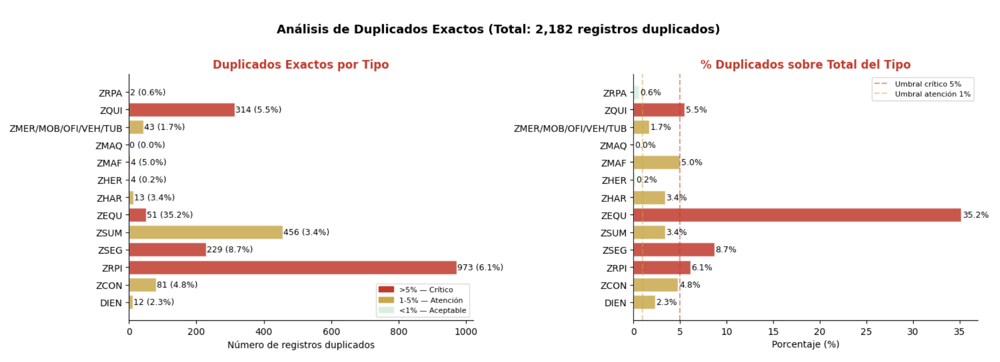
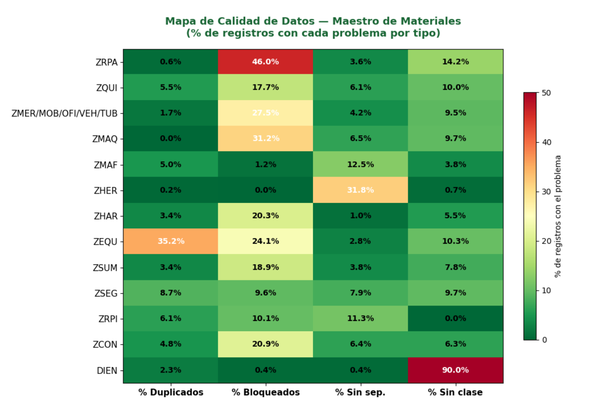
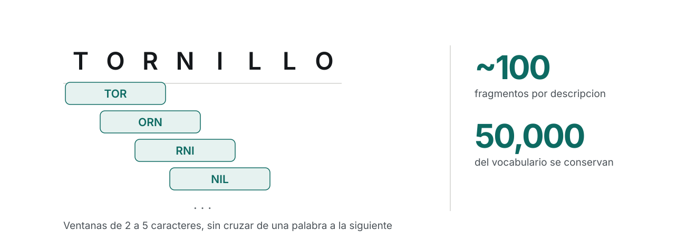
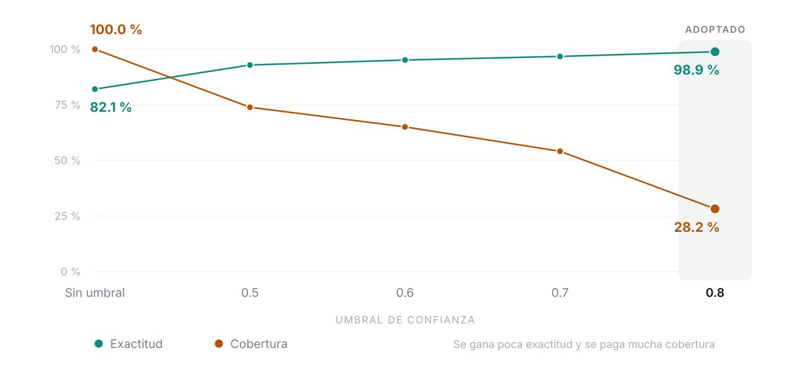

Plataforma de gobernanza de datos maestros mediante aprendizaje automático
Alejandra Alvarado · Erick Marroquín · Rudy Osorio
Maestría en Business Intelligence and Analytics — Universidad del Valle de Guatemala, 2026
La necesidad
Qué hace hoy un gestor de datos maestros antes de crear un material, y qué le cuesta a la organización que lo haga sin apoyo.
Contexto
45,397 materiales validados a mano
Unidad de negocio del sector energético, con operación en Centroamérica y el Caribe
El catálogo vive en el módulo MM de SAP y se reparte en 13 tipos de material
Antes de crear un material, el gestor confirma que no exista, le asigna categoría y verifica la norma ISO 8000
No existe ninguna herramienta que lo apoye en esas verificaciones
Planteamiento del problema
4.8 %
duplicidad exacta
8.3 %
sin separador estándar (duplicidad no detectable)
3.3 h
promedio por solicitud
No existe ningún mecanismo automatizado que apoye al gestor en el momento de la decisión: ni para verificar duplicados, ni para sugerir la categoría.
Justificación
Un material mal registrado afecta a compras y mantenimiento
Se propaga a compras, mantenimiento y trazabilidad de activos
Es acumulativo: sin apoyo analítico, el catálogo sigue incorporando inconsistencias
Corregir retroactivamente cuesta más que prevenir
De ahí los dos componentes de la solución: un modelo que asista en el momento de la decisión y un mecanismo que permita medir su efecto.
Fuentes de información
Extracción manual del módulo MM
Fuente primaria: maestro de materiales del módulo MM de SAP — 13 archivos, uno por tipo
Referencia: maestro de clases corporativo (1,538 clases) y taxonomía UNSPSC de Naciones Unidas
Corte: mandante 402, 29 de mayo de 2026 — 45,400 registros exportados, 45,397 activos
Composición del catálogo
45,397
materiales
13
tipos de material
2/3
concentrados en dos tipos: ZRPI y ZSUM
Los problemas de calidad no se distribuyen de forma uniforme entre tipos. Esa concentración es la que hace posible priorizar.
Descripciones sin separador estándar
8.3 %
3,759 descripciones sin separador — invisibles a una búsqueda exacta
4.8 %
2,182 registros con duplicidad exacta en el texto breve

Figura 2 · tesis, p. 27
Mapa de calidad consolidado
14.9 %
6,748 materiales bloqueados en el sistema
Cuatro dimensiones por tipo: % duplicados · % bloqueados · % sin separador · % sin clase. ZRPI y ZRPA combinan los volúmenes más altos con el mayor riesgo.

Figura 3 · tesis, p. 27
Registros sin clase y clases sin volumen
5,368
registros sin ninguna clase asignada en la fuente
> ½
de las clases del catálogo tienen diez materiales o menos
Esta distribución es la que obliga, en la fase de modelado, a tratar el desbalance de clases como un problema central y no como un detalle técnico.
Longitud de las descripciones
31.9
caracteres promedio por descripción
40
límite del campo de texto breve en SAP
Los gestores no abrevian por descuido: abrevian porque el sistema los obliga. Esa es la causa directa de las abreviaturas inconsistentes entre gestores.
Síntesis del análisis exploratorio
DuplicaciónSeparadoresClases faltantesLímite de caracteres
Cada módulo de GAMMA responde a uno de estos cuatro problemas.
El proyecto
Qué nos propusimos construir, hasta dónde llega, y cómo quedó resuelto cada uno de los cuatro problemas del catálogo.
Objetivo general
Desarrollar GAMMA
Una plataforma de asistencia analítica para el flujo de creación individual de materiales en SAP.
Procesamiento de lenguaje natural · Similitud difusa · Aprendizaje supervisado
Objetivos específicos
Implementar un pipeline de integración del maestro de materiales (arquitectura medallón)
Caracterizar los defectos de calidad acumulados en el catálogo — la línea base
Seleccionar el algoritmo de clasificación mediante evaluación comparativa de siete configuraciones
Construir una plataforma web de asistencia conversacional
Evaluar el efecto de la herramienta sobre el proceso de creación de materiales
Diseñar y ejecutar un plan de adopción cultural con gestores y jefatura
Alcance · qué sí incluye
El flujo de creación individual de materiales en SAP
Una única unidad de negocio, con operación multi-país
Tres intervenciones: normalización · detección de duplicados · sugerencia de categoría
GAMMA es asistencia, no automatización plena. No escribe en SAP. El gestor conserva el control de la decisión final.
Alcance · qué no incluye
No hay integración en línea con SAP, ni de lectura ni de escritura
No comprende el flujo de creación masiva de materiales
No corrige automáticamente duplicados ni materiales mal categorizados preexistentes — se cuantifican, no se remedian
La extensión a otras unidades de negocio se plantea como etapa posterior
La separación respecto del ERP es deliberada: es el mecanismo de supervisión humana sobre el que se diseñó la solución.
Arquitectura de integración
Las tres capas del medallón
Preparación de los datos
39,571
materiales en el conjunto de modelado
1,234
clases con al menos tres ejemplos
80/20
partición estratificada 31,656 · 7,915
Se descartan los materiales sin categoría en la fuente y las clases con menos de tres ejemplos. La función de normalización de texto es idéntica en entrenamiento y en inferencia.
Normalización de descripciones
El modelo no completa especificaciones ausentes
Se resolvió con un modelo de lenguaje de gran escala, consumido por API. Cuando la descripción es insuficiente devuelve la lista de campos faltantes, en lugar de completarlos con valores plausibles.
Alternativa descartada: motor de reglas y diccionario de abreviaturas — exige mantenimiento manual permanente conforme aparecen familias nuevas.
Detección de duplicados
Similitud difusa por trigramas
Consulta pg_trgm sobre el maestro normalizado: descompone cada descripción en subsecuencias de tres caracteres y mide la superposición. No coincidencia exacta.
Umbral deliberadamente permisivo: el costo de un falso positivo —que el gestor descarte una sugerencia irrelevante— es muy inferior al de un duplicado creado y arrastrado en el catálogo.
Arquitectura tecnológica
PostgreSQL 16 · FastAPI · Vue 3 · Docker Compose
Con la única excepción del servicio de modelo de lenguaje, que opera bajo pago por uso, toda la infraestructura es software de código abierto. Su operación es sostenible más allá del período de desarrollo, sin inversión adicional en licenciamiento.
La competencia de algoritmos
7
configuraciones, en dos rondas, sobre la misma partición y las mismas métricas
Exactitud · F1 macro · F1 ponderado · Top-3 — más el tiempo de entrenamiento, que entró como criterio de selección y no como dato de color.
Resultados de la competencia
Configuración
Exactitud
F1 macro
Top-3
Tiempo
LinearSVC + carácter
0.8208
0.7072
0.9176
54.1 s
Random Forest
0.8133
0.7029
0.9063
46 s
Reg. logística palabra
0.8095
0.6689
0.9135
29 s
Reg. logística carácter
0.8080
0.6423
0.9248
18 min
Transformer multilingüe
0.7995
0.5654
0.8953
54 min (GPU)
XGBoost
0.7949
0.6398
0.8941
3 h 42 min
fastText
0.7780
0.6275
0.8865
42.8 s
La configuración seleccionada
0.8208
Exactitud
0.7072
F1 macro
0.8041
F1 ponderado
0.9176
Top-3
SVM lineal sobre TF-IDF de n-gramas de carácter. 54.1 segundos en CPU, frente a las 3 h 42 min de XGBoost y los 54 minutos del transformador sobre GPU.
Cómo funciona el modelo
Vectorización por caracteres
TORNILLOTORNILOTORN
Para un vectorizador de palabras son tres tokens sin relación; para uno de caracteres, tres textos casi idénticos. Es la respuesta directa al límite de 40 caracteres de SAP: la abreviatura inconsistente es la norma.

Desempeño del modelo seleccionado
17.92 %
1,418 errores sobre 7,915 materiales de prueba
El error no se distribuye parejo: las clases con vocabulario propio y estable se resuelven casi sin error; las categorías genéricas —«repuesto», «herramienta»— concentran las tasas de acierto más bajas.
Buena parte de ese error no es un error de clasificación, sino un problema del catálogo: pares de clases que designan el mismo concepto y difieren solo en puntuación.
Calibración
Convertir la distancia en probabilidad
Una SVM no produce probabilidades, produce distancias con signo al hiperplano. La calibración las traduce en probabilidades fieles: de los casos a los que asigna 0.9, cerca del 90 % es correcto.
Sin esta etapa no existiría el umbral. Es lo que convierte un clasificador en un sistema capaz de abstenerse.
Exactitud y cobertura según el umbral

Umbral
Exactitud
Cobertura
Sin umbral
0.8208
100.0 %
0.5
0.9294
73.9 %
0.6
0.9517
65.1 %
0.7
0.9678
54.1 %
0.8 — adoptado
0.9888
28.2 %
Los dos tipos de error tienen costos distintos
Categoría incorrecta sin revisar
Cuesta para siempre: distorsiona reportes de consumo, complica la planificación de compras, se propaga. Nadie la detecta porque nadie la busca.
Sugerencia derivada a revisión
Consume la atención del gestor — que es exactamente el escenario que la herramienta atiende. Recibe 3 candidatos ordenados por probabilidad, con 91.8 % de exactitud sobre esos tres.
Los resultados
Cinco semanas de operación real: qué cambió en el tiempo de gestión, y qué concluimos de ello.
Tiempo de gestión
3.34 h
Línea base, pre-GAMMA
Mediana 2.82 h · n = 353 solicitudes 15 feb – 17 jun
1.39 h
Con GAMMA
Mediana 1.28 h · n = 98 solicitudes con tiempo medido, de las 153 asistidas
−58.4 % sobre el promedio · −54.7 % sobre la mediana. Mann-Whitney, p < 0.0001. Los intervalos de confianza al 95 % de ambos períodos no se traslapan.
Tablero operativo — Power BI, actualización semanal
153
solicitudes asistidas
88.2 %
acuerdo modelo–gestor
74.5 %
completitud de clase
56.5
códigos por gestor
11.8 %
tasa de corrección
70.6 %
cobertura de tipos
Conecta directo a la capa Gold, sin capa intermedia, sobre licencia Premium ya existente. Vistas complementarias: tiempo de máquina por tipo, desempeño por gestor, duplicados por semana.
La mejora no viene de que la máquina calcule rápido. Viene de que el gestor recibe la descripción normalizada, los candidatos a duplicado y la categoría sugerida ya resueltos, en lugar de construir esa información con consultas manuales sucesivas en SAP.
Encuesta de satisfacción
5.00
facilidad de uso (gestores)
4.33
satisfacción general (gestores)
4.00
reducción de tiempo percibida
4.5
alineación con calidad (jefatura)
Tasa de respuesta 71.4 %. Dado el tamaño reducido de la población, se interpreta como el registro directo de la opinión de la mayoría de los involucrados, no como una muestra estadística sobre un universo mayor.
Impacto financiero
Q1,641
costo total del proyecto hospedaje + capacitación
243×
retorno sobre la mediana (308× sobre el promedio)
1.2–1.5
días de período de recuperación
La magnitud es, en buena medida, un artefacto del denominador: el costo refleja el gasto marginal de un proyecto de graduación, no el de un desarrollo contratado. Lo que sí es sólido bajo cualquier escenario es que la reducción de tiempo que sustenta el ahorro es significativa y no atribuible al azar.
Conclusiones — 1 de 2
El maestro de materiales quedó consolidado en un repositorio único, normalizado y trazable
El análisis confirmó defectos de calidad relevantes y reveló un hallazgo no anticipado sobre la taxonomía
La configuración más simple de las siete resultó también la más exacta, por un margen consistente
Conclusiones — 2 de 2
GAMMA integra los tres módulos analíticos en el flujo real de creación, sin sustituir la decisión final del gestor
La herramienta redujo a menos de la mitad el tiempo de gestión, con retorno de inversión inmediato
El objetivo general se cumplió: GAMMA se desarrolló, se desplegó y operó sobre solicitudes reales, articulando procesamiento de lenguaje natural, similitud difusa y aprendizaje supervisado sobre el histórico del catálogo.
Recomendaciones para la operación
Depurar la taxonomía de clases antes de ampliar el alcance
Hacer exigible la convención de separadores en el momento de la captura
Resolver la categorización de los materiales sin clase asignada
Consolidar la operación en esta unidad antes de escalar a otras
Contrastar periódicamente el umbral de confianza con el comportamiento real
Explotar la instrumentación de calidad que el sistema ya captura
Recomendaciones para la continuidad técnica
Adoptar una partición agrupada por descripción en la evaluación
Sustituir la partición única por validación cruzada
Realizar la evaluación por ablación del término principal
Cuantificar la duplicidad difusa —no solo la exacta— sobre el catálogo completo
Evaluar la incorporación del clasificador al flujo de carga masiva
Gracias
Quedamos atentos a sus preguntas y observaciones.
Alejandra Alvarado · Erick Marroquín · Rudy Osorio
Maestría en Business Intelligence and Analytics — Universidad del Valle de Guatemala, 2026